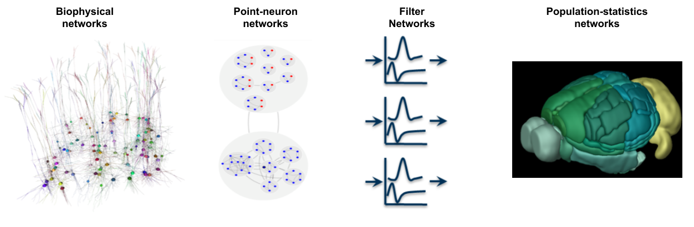
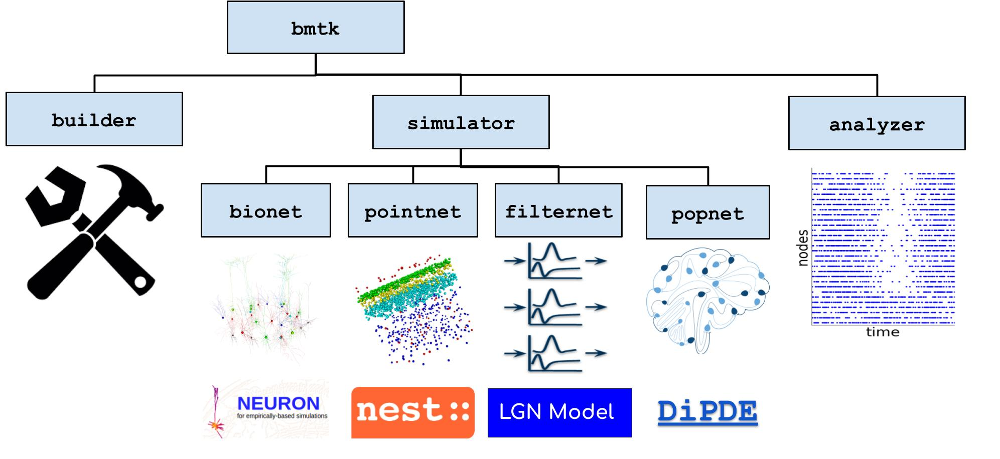
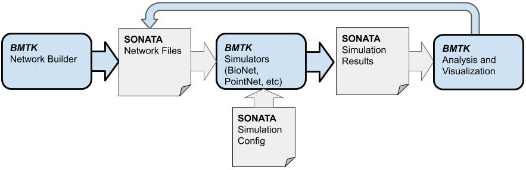
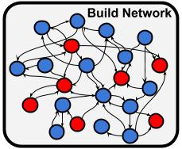
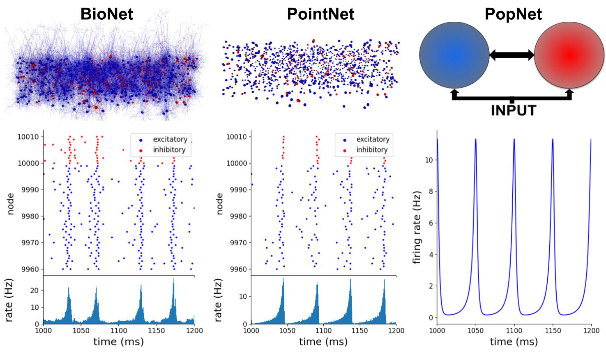
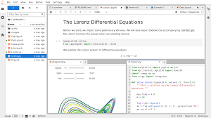
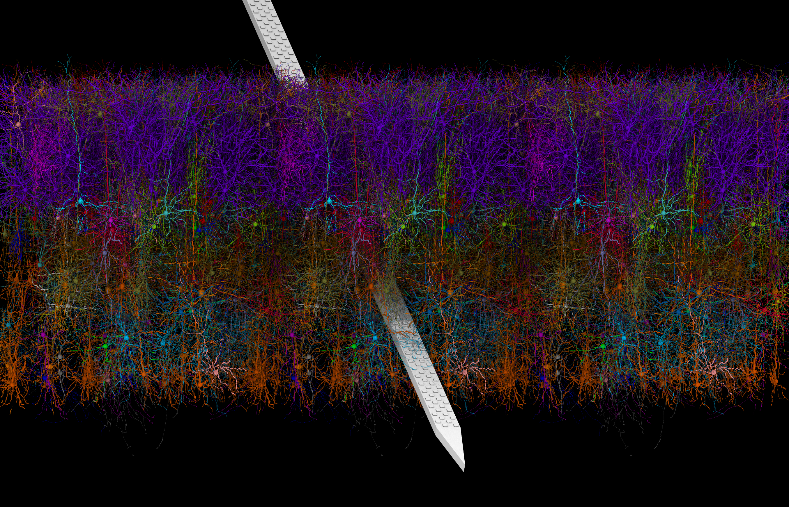

User Guide#
Overview of BMTK Workflow and Architecture#
The Brain Modeling Toolkit (BMTK) is a python-based software package for building, simulating and analyzing large-scale neural network models. It supports the building and simulation of models of varying levels-of-resolution; from multi-compartment biophysically-detailed networks, to point-neuron models, to filter-based models, and even population-level firing rate models.
{kind=link}

The BMTK is not itself a simulator and utilizes existing simulators, like NEURON and NEST, to run different types of models. What BMTK does provide is a streamlined workflow to build, analyze, and store models efficiently:
{kind=link}

The BMTK Workflow and architecture#
BMTK can readily scale to run models of single neurons, and even single compartments, for all different types of neuronal networks. However BMTK was designed for very-large, highly optimized mammalian cortical network models. Generating the connectivity matrix could take hours or even days to complete. We can then test these optimized base-line models against a large variety of conditions and stimuli and directly compare with existing in-vivo recordings (see Allen Brain Observatory).
{kind=link}

Unlike other simulators, BMTK separates the process of building, simulating, and analyzing the results. First a fully instantiated base-line version of the model is built and saved to a file so that each time a simulation runs it takes only a small fraction of the time to instantiate the simulation. Results are also saved automatically. BMTK and the format it uses (SONATA, see below) makes it easy to dynamically adjust cell and synaptic parameters so that multiple iterations of a simulation can be done as fast as possible.
As such BMTK can be broken into three major components:
The Network Builder [
bmtk.builder] - Used to build network modelsThe Simulation Engines [
bmtk.simulator] - Interfaces for simulating the network- Analysis and Visualization Tools [
bmtk.analyzer] - Python functions for analyzing and visualizing the network and simulation results
- Analysis and Visualization Tools [
The components can function as one workflow or separately by themselves. BMTK utilizes the SONATA Data format (see next section) to allow sharing of large-scale network data. As such, it is possible to use the Network Builder to build the model but another tool to run the model. Or if another model has been built by someone else and saved in SONATA format, BMTK will be able to simulate it.
Getting Started#
NetworkBuilder

Setting up environments, BioNet, PointNet, PopNet

Plotting simulation results and statistics

Related Resources#
Link to workshops and other tutorials

VND

SONATA format guide and API

Link to brain-map portal